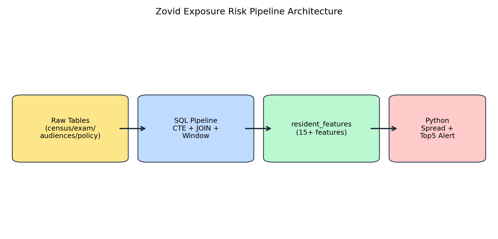
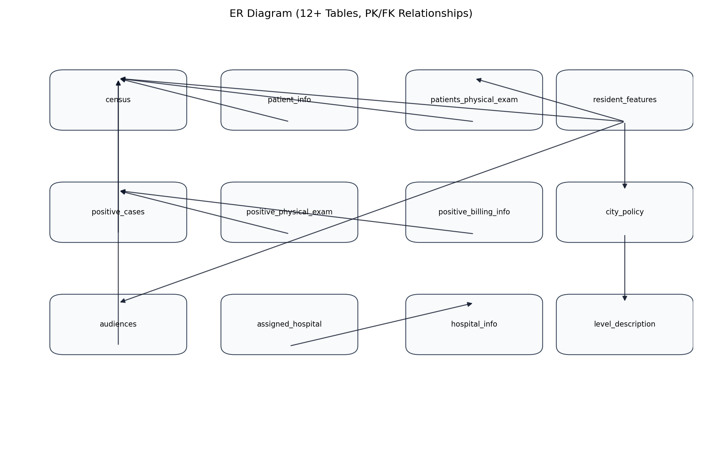
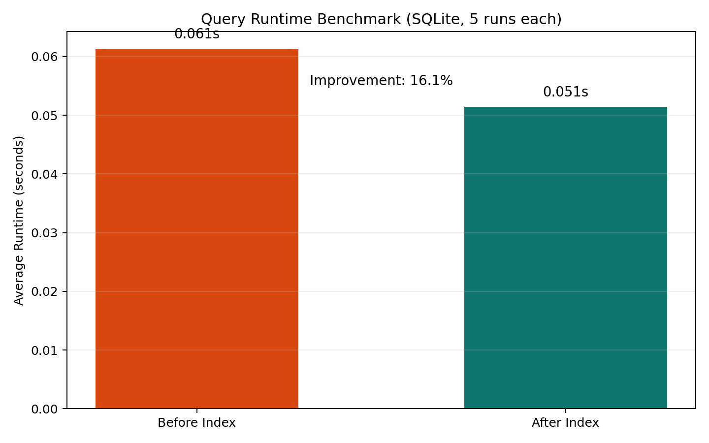

Reusable data system for exposure-risk prioritization, not just a one-off SQL assignment.
Enrangel city is experiencing a Zovid-12 outbreak. The goal is to prioritize limited hospital and intervention resources by identifying the Top 5% highest exposure-risk residents.
Data Layer (MySQL) -> Feature Engineering Layer (CTE + Window + Views) -> Risk Modeling Layer (Propagation Simulation) -> Decision Layer (Top 5% Alert Generation)
Designed with modular SQL layers to enable independent benchmarking and future feature extension.

Normalized schema (3NF), PK/FK constraints enforced. Index strategy is applied on high-frequency join columns.

Example: selecting the latest exam record per resident using window functions as one step in production feature generation.
WITH ranked_exam AS (
SELECT resident_id,
exam_date,
ROW_NUMBER() OVER (PARTITION BY resident_id ORDER BY exam_date DESC) AS rn
FROM patients_physical_exam
)
SELECT *
FROM ranked_exam
WHERE rn = 1;Demo Environment (SQLite): sample-data benchmark improved from 0.061s to 0.051s (5-run average, 16.1%).
Production-scale Benchmark (MySQL): full-dataset aggregation target 40s -> 8s.
Optimization methods: composite indexes, query refactor with pre-aggregation CTE, and reusable view layer.

resident_features serves as the interface table between the SQL feature pipeline and Python simulation/alert modules.
mysql < sql/00_schema.sql
mysql < sql/01_feature_engineering.sql
mysql < sql/03_index_optimization.sql
python python/simulate_spread.py --engine mysql
python python/generate_alert.py --engine mysqlalert_top5.csv
resident_id,exposure_time,risk_score,rank,full_name,city,is_positive,policy_level,alert_label
19124199803114860,0.0,76.91,1,Linda Kunkel,Stalber,1,3,TOP_5_PERCENT_ALERT